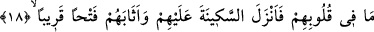
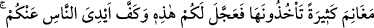
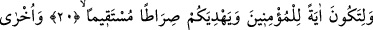
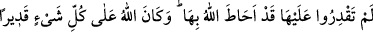
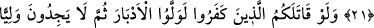
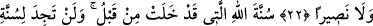
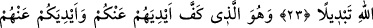
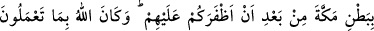
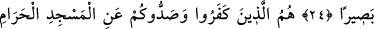
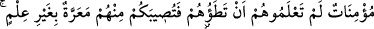
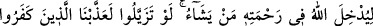
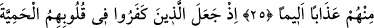
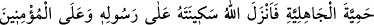
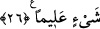
ALLAH MÜMİNLERE
SÜKÛNET VE GÜVENİNİ
İNDİRDİ
18. Andolsun ki o ağacın altında sana biat ederlerken Allah, o müminlerden razı
olmuştur. Kalplerinde olanı bilmiş, onlara güven duygusu vermiş ve onları pek yakın
bir fetihle ödüllendirmiştir.
19. Yine onları elde edecekleri birçok ganimetlerle de mükâfatlandırdı. Allah
üstündür, hikmet sahibidir.